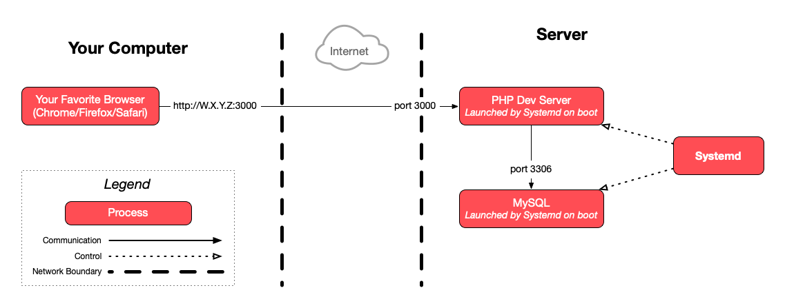

Connect to your cloud server with SSH for this exercise.
Manage a PHP application with systemd as a Process Manager
This guide describes how to create a systemd service to run the PHP todolist application.
On this page
Table of contents
 Legend
Legend
Parts of this exercise are annotated with the following icons:
-
 A task you MUST perform to complete the exercise
A task you MUST perform to complete the exercise
-
 Optional step that you may perform to make sure that
everything is working correctly, or to set up additional tools that are not required but can
help you
Optional step that you may perform to make sure that
everything is working correctly, or to set up additional tools that are not required but can
help you
-
 Advanced tips on how to go further (or
challenges!)
Advanced tips on how to go further (or
challenges!)
 The end of the exercise
The end of the exercise-
 The architecture of the software you ran or
deployed during this exercise
The architecture of the software you ran or
deployed during this exercise
-
 Troubleshooting tips: how to fix common problems you might
encounter
Troubleshooting tips: how to fix common problems you might
encounter
Requirements
Make sure you have completed the previous exercise first.
Stop your php -S command if it is still running.
You can use Ctrl-C to stop any command currently running in your terminal.
What you have done so far to run your application
If we try to summarize what you have done so far to run the PHP todolist application on your server, it basically consists of these steps:
-
Connect to the server with SSH as your user, e.g.
jde:$> ssh jde@W.X.Y.Z -
The first time, install MySQL and check that it is running:
$> sudo apt install mysql-server$> sudo systemctl status mysql -
Move into the application directory:
$> cd todolist-repo -
Run the application with the appropriate environment variables:
$> TODOLIST_DB_PASS=changeme php -S 0.0.0.0:3000
Create a systemd unit configuration file
Now you want systemd to run the application automatically for you. You need to tell systemd how to do it. But you cannot simply tell systemd to execute the commands above, because it does not understand Bash commands or Bash syntax. It uses configuration files in a certain format.
You must write a systemd unit file which describes how and when to run the application (the “unit” in systemd terminology). You can see examples of existing unit file by looking at the ones for the MySQL or SSH servers running on your server:
$> cat /lib/systemd/system/mysql.service
$> cat /lib/systemd/system/ssh.service
You will not use exactly the same options, but it shows you what a complete unit file can look like.
Create your own unit file for the PHP todolist at
/etc/systemd/system/todolist.service. You will have to use nano (or Vim) to
create and edit this file directly on the server. You cannot use an SFTP client.
You can edit a file with nano by running the following command:
sudo nano <path>
If the file does not exist, it will be created by nano when you exit and save.
The sudo is necessary because the /etc/systemd/system directory is only
writable by root.
You cannot use FileZilla because you cannot connect with root over SFTP as
that is considered insecure and therefore not allowed by the default
configuration of the SSH server.
You may find the following documentation useful to write your unit file:
[Unit]section options[Service]section options- Environment
(for the
Environment,UserandWorkingDirectoryoptions)
- Environment
(for the
[Install]section options
The [Unit] section
You should briefly document what your service is with a Description option.
You may want to use an After option. What other service needs to already be
running for the PHP TodoList to work? If there is one, your application should
start after it.
You can use the ls /lib/systemd/system command to list other system services.
The [Service] section
You should tell systemd what command to run your application with using the
ExecStart option.
You must use absolute command paths with ExecStart. For example, if you
want to execute the php command, you cannot simply write php, you have to
use the absolute path to the command instead.
You can find the path to any binary with the which <command> command.
You must tell systemd where to execute the command (in which directory) with
the WorkingDirectory option. This must be an absolute path.
Go in the application directory on the server and execute the pwd
(print working directory) command if you are not sure what the
absolute path is.
You should tell systemd which user must run the command with the User
option. Use your own username.
It’s bad practice to run an application with the root user. An
application running as the root user that has any security flaw could
allow an attacker to gain superuser privileges, and thus obtain complete
control over your server.
To go further, you could create a system user specifically to run this application. This would allow you to limit that user’s privileges, also limiting the damage an attacker could make if your application is compromised.
If your application requires one or multiple environment variables to be set,
you can set them by adding an Environment option. This option can be included
in the file multiple times to set multiple environment variables.
In case your application crashes due to a bug or a server issue, you should
configure the Restart option so that systemd automatically restarts it when
there is a problem.
The [Install] section
You may want to set the WantedBy option to tell systemd to automatically start
your application when the server boots. You can use the value
multi-user.target for this option.
multi-user.target means that the operating system has reached the multi-user
runlevel. In other words, it means
that user management and networking have been initialized. This is typically
when you want to start running other processes which depend on users and/or
networking, like web applications.
Recap
Here’s another way to look at this information:
| Things you do to run the application | How to do it manually | How to tell systemd to do it |
|---|---|---|
Run commands as user jde |
Connect as jde with SSH |
User=jde in the [Service] section |
| Make sure a service is started | sudo systemctl status <service> |
After=<service> in the [Unit] section |
| Move into a directory | cd <path> |
WorkingDirectory=<path> in the [Service] section |
| Set an environment variable | KEY=value ... |
Environment="KEY=value" in the [Service] section |
| Execute a command | <command> <arg1> <arg2> |
ExecStart=<absolute-path-to-command> <arg1> <arg2> in the [Service] section |
| Restart the application automatically when it crashes | Cannot be done manually | Restart=<policy> in the [Service] section |
| Have the application start automatically on boot | Cannot be done manually | WantedBy=<target> in the [Install] section |
You should put comments in your unit file to explain what each option is for.
This can help you if you come back later and do not remember what you did or
why. Any line starting with # is considered a comment.
Enable and start the todolist service
Enable and start your new service.
The systemd control command (systemctl) allows you to manipulate services:
sudo systemctl <operation> <service-name>.
The operations to enable and start are simply enable and start. The name of
the service is the name of your unit file without the “.unit” extension. For
example, if the unit file is “todolist.service”, the name of your service is
“todolist”.
Check that the service is running properly and that there were no errors.
You can also use the systemctl command to check the status of your service
with its status operation (instead of enable or start). It should also
show you the last few lines of its logs.
To see the complete logs, you can use the sudo journalctl -u <service-name>
command. Pay attention to the timestamps at the beginning of each line, which
will let you know when each event occurred.
You (and everybody else) should be able to access the running todolist
application in your browser on your server’s IP address and port 3000 (e.g.
W.X.Y.Z:3000).
Reboot and try again
If you have configured your unit file correctly, your application should restart automatically if the server is rebooted.
Try to reboot your server:
$> sudo reboot
The application should still be running.
The /etc/systemd/system/todolist.service file on your server should look
something like this:
[Unit]
Description=PHP todolist
# The todolist should start after MySQL since it requires the database to
# list, create, update and delete its todos.
After=mysql.service
[Service]
# Listen on port 3000 with the PHP development server.
ExecStart=/usr/bin/php -S 0.0.0.0:3000
# Run the development server in the directory of the todolist repository.
WorkingDirectory=/home/jde/todolist-repo
# Run the development server as my user.
User=jde
# Provide the database connection password through the environment.
Environment="TODOLIST_DB_PASS=CHANGEME"
Restart=on-failure
[Install]
# Automatically start on boot.
WantedBy=multi-user.target
What have I done?
You have configured your operating system’s process manager (systemd, which comes bundled with Ubuntu) to manage your application’s lifecycle for you. You no longer have to worry about:
- Running the command to start the application.
- Restarting the application after rebooting the server.
- Restarting the application after it crashes due to a bug.
Architecture
This is a simplified architecture of the main running processes and communication flow at the end of this exercise.

{kind=link}
Troubleshooting
Here’s a few tips about some problems you may encounter during this exercise.
My systemd service is not running
If sudo systemctl status todolist indicates a problem with your unit file, you
should fix the problem in your unit file. Then, be sure to run sudo systemctl daemon-reload to take the changes into account. You may also need to run sudo systemctl restart todolist to restart your application.
If the status command does not give you enough information, you can get more of
your service’s logs with the sudo journalctl -u todolist command.
code=exited, status=200/CHDIR
If you see an error like this when getting the status of your service:
$> sudo systemctl status todolist
× todolist.service - PHP TodoList
Loaded: loaded (/etc/systemd/system/todolist.service; enabled; preset: enabled)
Active: failed (Result: exit-code) since Mon 2024-11-04 19:25:12 UTC; 193ms ago
Duration: 6ms
Process: 303126 ExecStart=/usr/bin/php -S 0.0.0.0:3000 (code=exited, status=200/CHDIR)
Main PID: 303126 (code=exited, status=200/CHDIR)
CPU: 3ms
...
Nov 04 19:25:12 jde.archidep.ch systemd[1]: Failed to start todolist.service - PHP TodoList.
It means that systemd failed to move into the directory you specified with the
WorkingDirectory key. Make sure that you are using the correct directory. This
should be the same directory that you were moving into before executing the php -S 0.0.0.0:3000 command manually in previous exercises.
If you are not sure what the full path to that directory is, go into it and run
the pwd (print working directory) command.
code=exited, status=203/EXEC
If you see an error like this when getting the status of your service:
$> sudo systemctl status todolist
× todolist.service - PHP TodoList
Loaded: loaded (/etc/systemd/system/todolist.service; enabled; preset: enabled)
Active: failed (Result: exit-code) since Mon 2024-11-04 19:17:24 UTC; 1s ago
Duration: 6ms
Process: 302966 ExecStart=php -S 0.0.0.0:3000 (code=exited, status=203/EXEC)
Main PID: 302966 (code=exited, status=203/EXEC)
CPU: 2ms
...
Nov 04 19:17:24 jde.archidep.ch systemd[1]: Failed to start todolist.service - PHP TodoList.
It means that systemd failed to run the command you specified with the
ExecStart key. Make sure you are using the correct command and that you are
using ExecStart with the correct syntax.
Look at the documentation for ExecStart, look at
service examples in the documentation, and look at
existing unit files (e.g. /lib/systemd/system/mysql.service or
/lib/systemd/system/ssh.service) to determine what you might have done wrong.
Failed to resolve unit specifiers
If you have a % (percent character) in the password you provide with the
TODOLIST_DB_PASS variable, and systemd indicates an error about failing to
resolve specifiers, it is because the % character has special meaning to
systemd.
You must escape it by adding another % character, e.g.
TODOLIST_DB_PASS=foo%%bar instead of TODOLIST_DB_PASS=foo%bar.